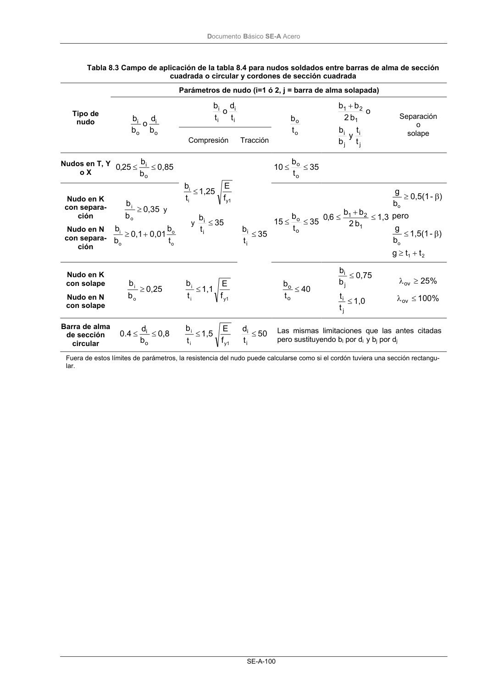

DB-SE-A · Página 102 · versión 2007-10-23
SHA256: 9ed9ea694aabfbda3bfbbef40dfe9223fde05d13c35bc2ba9751e5a96a22a64f · página física 102 de 168 · métodos de encabezado
solo si están cotejados.
Documento · ← p. 101 · p. 103 →
Formatos: Markdown · JSON de bloques · PDF p. 102 · imagen PNG
Documento Básico SE-A Acero SE-A-100 Tabla 8.3 Campo de aplicación de la tabla 8.4 para nudos soldados entre barras de alma de sección cuadrada o circular y cordones de sección cuadrada Parámetros de nudo (i=1 ó 2, j = barra de alma solapada) i i i i t d o t b Tipo de nudo o i o i b d o b b Compresión Tracción t b o o j i j i 1 2 1 t t y b b o b 2 b b + Separación o solape Nudos en T, Y o X 0,85 b b 25 ,0 o i ≤ ≤ 35 t b 10 o o ≤ ≤ Nudo en K con separa- ción Nudo en N con separa- ción 0,35 b b o i ≥ y o o o i t b 0,01 0,1 b b + ≥ y1 i i f E 1,25 t b ≤ y 35 t b i i ≤ 35 t b 15 o o ≤ ≤ 1,3 b 2 b b 6,0 1 2 1 ≤ + ≤ 2 1 o o t t g ) - 1,5(1 b g pero ) - 0,5(1 b g + ≥ β ≤ β ≥ Nudo en K con solape Nudo en N con solape 0,25 b b o i ≥ y1 i i f E 1,1 t b ≤ 35 t b i i ≤ 40 t b o o ≤ 1,0 t t 0,75 b b j i j i ≤ ≤ % 25 ov ≥ λ % 100 ov ≤ λ Barra de alma de sección circular 0,8 b d 4 . 0 o i ≤ ≤ y1 i i f E 1,5 t b ≤ 50 t d i i ≤ Las mismas limitaciones que las antes citadas pero sustituyendo bi por di y bj por dj Fuera de estos límites de parámetros, la resistencia del nudo puede calcularse como si el cordón tuviera una sección rectangu- lar.
